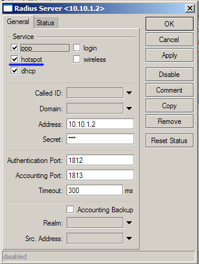

|
Настройка HotSpot на MikroTik RouterOS |
Top Previous Next |
|
Настройка HotSpot на сервере доступа нужна в том случае, если вы будете предоставлять своим абонентам доступ в интернет посредством HotSpot карт доступа.
Для начала требуется разрешить RADIUS клиенту в RouterOS отправлять запросы на автризацию HotSpot абонентов на сервер с биллинг-системой.  Настройка RADIUS клиента / radius add service=hotspot address=10.10.1.2 secret=123 Затем требуется настроить HotSpot на MikroTik. Для настройки рекомендуем вам воспользоваться официальной инструкцией на сайте wiki.mikrotik.com (http://wiki.mikrotik.com/wiki/Hotspot_server_setup).
Обратите внимание: ExpertBilling использует RADIUS Accounting только для тарификации времени. Тарификация трафика происходит на основе NetFlow статистики. This help file was created with an unregistered evaluation copy of Help & Manual. © EC Software. All rights reserved. This message will not appear if you compile this help file with the registered version of Help & Manual. |